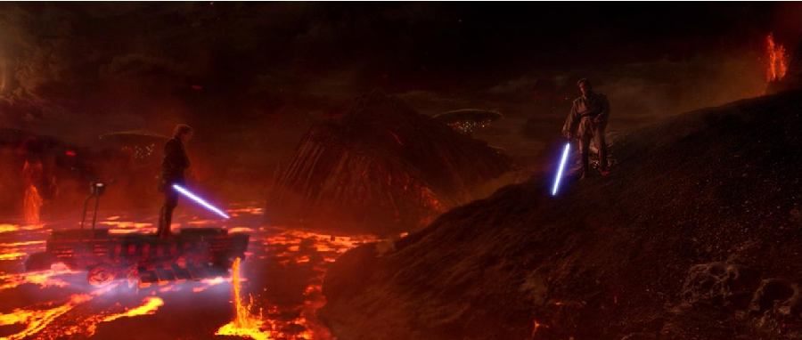
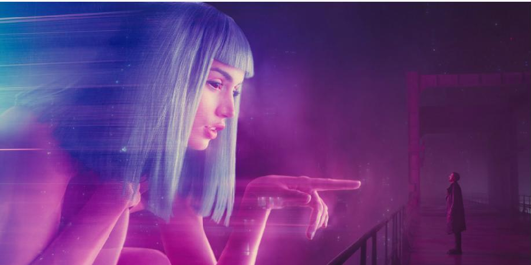
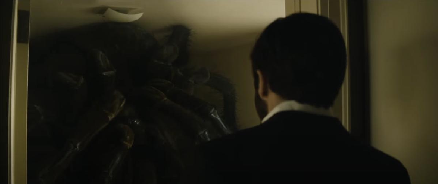
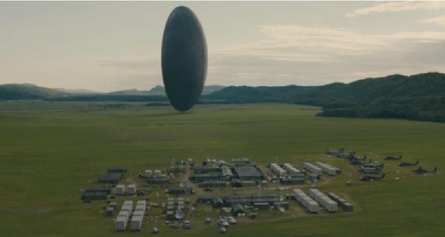
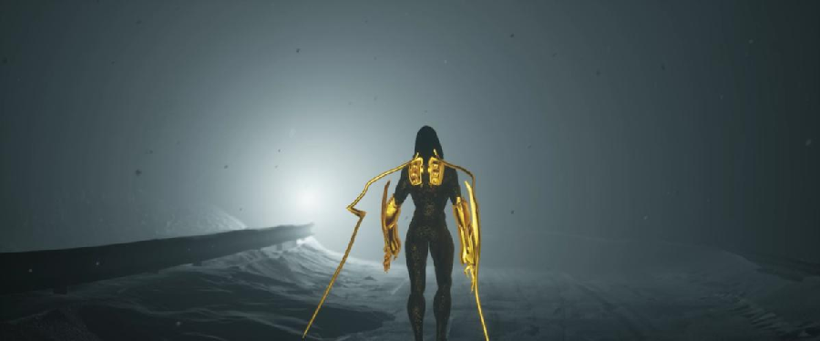
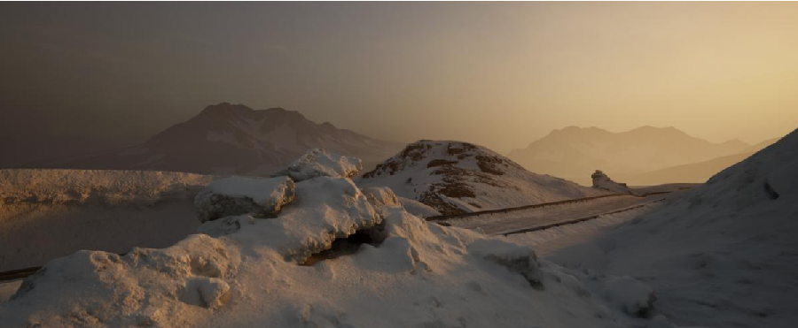
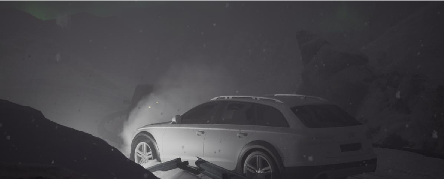
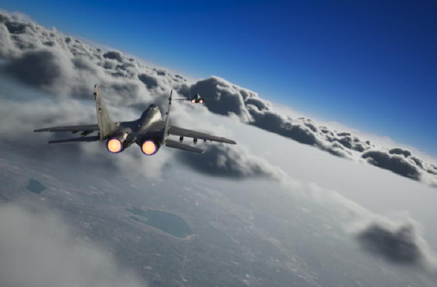

The Art of Scale
Thesis: Denis Villeneuve uses scale not as spectacle but as narrative — how big something looks matters less than how it relates to the viewer and the characters around it. Below: the four films the paper builds that case on, then the same lens turned on my own work.




Relative scale — objects or characters measured against each other within a frame — does most of this work invisibly. The paper's example: the "I have the high ground" shot from Star Wars, where the camera framing itself carries moral weight independent of the dialogue. Lens choice matters too — wide angles exaggerate depth, telephoto flattens and pulls elements together.
Applying it to my own work
Landscapes built to hold a specific mood, where the camera setup matters as much as the environment itself.



